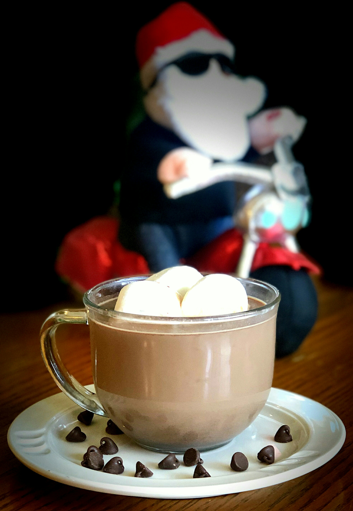

"Polar Express" Chocolate Caliente

Chocolate caliente cremoso, perfecto para el invierno!
ingredientes:
- 6 tazas de leche
- 2 tazas de chispas de chocolate con leche
- 14 onzas de leche condensada azucarada
- 1½ tazas de crema batida espesa
- 1 cucharadita de extracto de vainilla
Pasos:
- Combine la leche, las chispas de chocolate, la leche condensada, la crema espesa y el extracto de vainilla en una olla de cocción lenta configurada en Bajo
- Cocine, revolviendo ocasionalmente, hasta que se caliente por completo, aproximadamente 2 horas
- Deje enfriar hasta que sea seguro para beber, unos 5 minutos